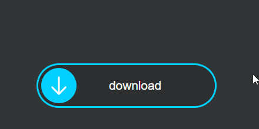
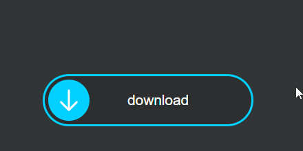

A page may begin with an introduction followed by subheadings.
HELLO PAKISTAN
21st Centrury
H2
When It Rains
Water Comes
More or More
HTML is used to build the structure of the web page
CSS is used for layout and presentation of the web page
Alert! Don't Go To Outside
I Know How To Build Website Structure With HTML
BLOCK QUOTE
THIS IS MY HOBBY
Dr.Arif Alvi Is The President of Pakistan.
This Is Cloud Native Specialist Program Is Part Of The
L-358, Sector 11-L, North Karachi Sunday Car Bazar, North Karachi, Karachi Pakistan.
This Refference Will Get From The Author Satoshi Nakamoto
This Is Definition Of HTML
Old Rate Rs:230 New Rate Rs:300
Rs:1800
Ranked Best of The IVY League
Grocery List
PIAIC Presedential Initiative Artificial Intelligence & Computing
 


| S.N # | NAME | PASSWORD | MOBILE NO | ADDRESS | |
|---|---|---|---|---|---|
| 1 | ZOYA | zoya@gmail.com | zoya | 03478899780 | R-998, Sector 11-A, North Karachi, Karachi Pakistan |
| 2 | SOHA | soha@gmail.com | 03478899777 | ||